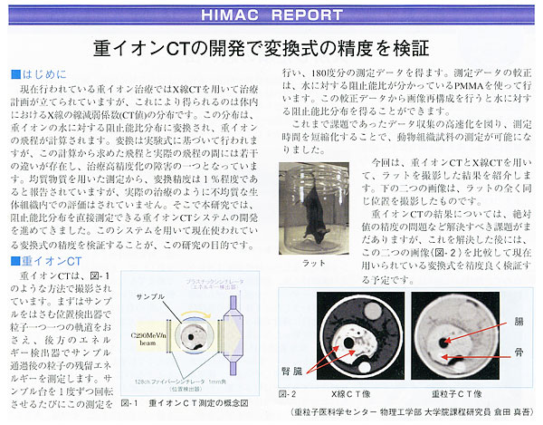

博士前期２年の倉田真吾の研究が“放医研NEWS”に掲載（2007年１月）
独立行政法人放射線医学総合研究所の“放医研NEWS”の１月号において，『HIMAC REPORT』として中村研の博士前期２年の倉田真吾の研究が掲載されました。タイトルは「重イオンCTの開発で変換式の精度を検証」で，放医研の金井達明博士の下で医学物理に関する基礎的な研究を行なっています。なお，倉田真吾は2006年秋より放医研の大学院課程研究員に採用されています。
〈放医研サイトの掲載ページ〉
